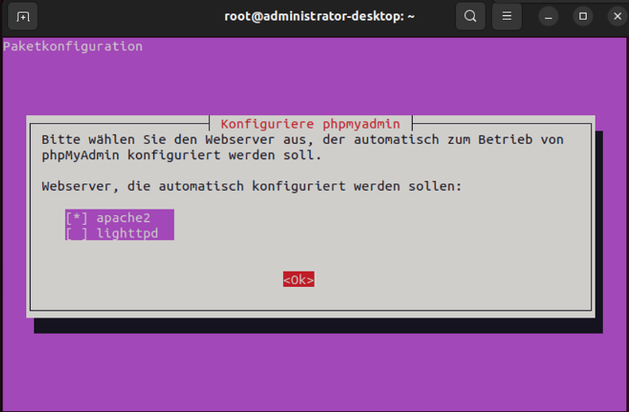
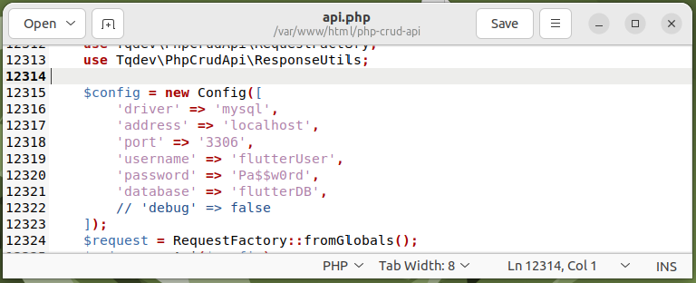
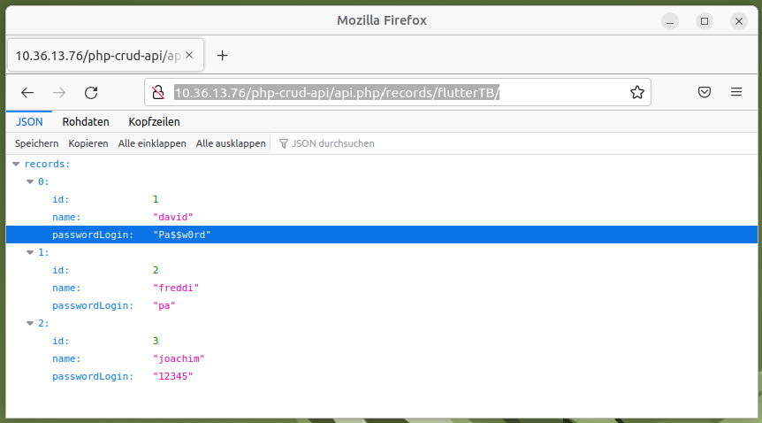

ZIP herunterladen und entpacken – oder:
git clone https://github.com/bnBSinfo/rest_lernpfad_schueler.gitOrdner in VS Code oder Android Studio öffnen, einmalig im Terminal:
dart pub getAuftrag lesen und auf dem Pi umsetzen. Ab Level 6 schreiben Sie SQL, PHP und Dart auf dem PC
(server/, lib/) und bringen es auf den Pi.
IP in pi.txt eintragen. Bei Rot steht ein Hinweis in der Ausgabe. Gesamtstand:
dart run tool/pruefen.dart📘 Wissen: REST – HTTP-Methoden, Statuscodes, JSON und ein Baukasten, der Ihnen zu jeder Anfrage die Adresse, den curl-Befehl, den Dart-Code und das SQL dahinter zeigt.
SD-Karte, Benutzer, Updates, IP-Adresse
Ziel: Ihr Raspberry Pi läuft mit Ubuntu, ist aktuell und im Netz erreichbar. Sie kennen seine IP-Adresse.
Dateien: pi.txt ·
Skript: Ubuntu – SD-Karte erstellen, Einrichten des
Raspberry Pi
administrator mit dem Passwort Pa$$w0rd
an.sudo -i
apt update
apt upgrade -y
apt autoremove -ypi.txt ein (ip=…):
hostname -Isudo -i öffnet eine Shell als
root. Danach steht vor jedem Befehl automatisch Admin-Recht
– das sudo entfällt. Erkennbar am # statt
$ am Ende der Eingabezeile. Mit exit werden
Sie wieder normaler Benutzer.
apt ist die Paketverwaltung von
Ubuntu:
| Befehl | Was er tut |
|---|---|
apt update |
lädt die Liste der verfügbaren Pakete neu – installiert nichts |
apt upgrade |
installiert neuere Versionen aller Pakete |
apt install paket |
installiert ein Paket |
apt autoremove |
entfernt nicht mehr benötigte Pakete |
IP-Adresse: Jedes Gerät im Netz hat eine Adresse, z.
B. 10.36.13.76. Ihr PC braucht sie, um den Pi zu erreichen
– per SSH, Browser und später aus der App. Das Skript nennt
ifconfig (Paket net-tools); moderner und ohne
Installation geht hostname -I oder
ip -4 a.
dart run tool/pruefen.dart 1 – das Tool klopft am Pi an.
Antwortet er, ist er im Netz.
Pingen Sie den Pi vom PC aus: ping 10.36.13.76. Kommt
keine Antwort: Kabel, Netz und IP prüfen. Bei mehreren Adressen aus
hostname -I ist die erste meistens die richtige.
Direkt nach dem ersten Start sucht Ubuntu selbst nach Updates. Warten Sie ein paar Minuten und versuchen Sie es erneut.
Merke:
apt updateaktualisiert nur die Paketliste,apt upgradedie Programme. Die IP-Adresse ist die „Hausnummer“ Ihres Servers im Netz.
Denkfrage: Warum kann sich die IP-Adresse Ihres Pi nach einem Neustart ändern – und was bedeutet das für eine App, die fest auf diese Adresse zugreift?
neu / im Einsatz in diesem Levelschon da kommt noch
openssh-server, ssh, scp
Ziel: Sie steuern den Pi vom PC aus über das Netz – ohne Tastatur und Bildschirm am Pi.
Skript: SSH-Zugang einrichten, Zugriff auf den Pi
apt install -y openssh-server
systemctl enable --now sshssh administrator@10.36.13.76yes. Geben Sie im SSH-Fenster hostname ein –
es antwortet der Pi.SSH (Secure Shell) ist eine verschlüsselte Terminal-Verbindung. Alles, was Sie tippen, läuft verschlüsselt über Port 22 zum Pi und wird dort ausgeführt. So betreut man Server, die im Rechenzentrum ohne Bildschirm stehen.
systemctl enable --now ssh –
enable startet den Dienst bei jedem Hochfahren,
--now startet ihn sofort.
Fingerabdruck: Beim ersten Verbinden merkt sich Ihr PC den Schlüssel des Pi. Ändert er sich später, warnt SSH – jemand könnte sich als Ihr Pi ausgeben.
Dateien kopieren geht mit demselben Zugang:
scp datei administrator@IP:/tmp/ – das brauchen Sie in
Level 7.
dart run tool/pruefen.dart 2
Der SSH-Dienst läuft nicht. Auf dem Pi:
systemctl status ssh – steht dort nicht active,
systemctl enable --now ssh wiederholen.
Benutzername oder Passwort falsch. Achtung: Beim Tippen des Passworts erscheinen keine Sternchen – das ist normal.
Merke: SSH = verschlüsselter Fernzugriff auf die Kommandozeile, Port 22. Ab jetzt können Sie alle weiteren Level vom PC aus erledigen.
Denkfrage: Warum ist es gefährlich, auf einem Server
im Internet SSH mit dem Passwort Pa$$w0rd offen zu
lassen?
neu / im Einsatz in diesem Levelschon da kommt noch
apache2, Port 80, /var/www/html
Ziel: Auf dem Pi läuft ein Webserver, den Sie vom PC aus im Browser aufrufen.
Skript: Webserver installieren
apt install -y apache2http://<IP Ihres Pi> – es erscheint die Apache2
Ubuntu Default Page.ls -l /var/www/htmlEin Webserver wartet auf Port 80
auf HTTP-Anfragen und schickt Dateien zurück. Der Browser fragt
GET /, Apache antwortet mit
/var/www/html/index.html.
| Adresse im Browser | Datei auf dem Pi |
|---|---|
http://IP/ |
/var/www/html/index.html |
http://IP/info.php |
/var/www/html/info.php |
http://IP/php-crud-api/api.php |
/var/www/html/php-crud-api/api.php |
/var/www/html ist das Wurzelverzeichnis
(DocumentRoot) – alles darin ist aus dem Netz erreichbar.
Merken Sie sich das, es wird in Level 4, 7 und 8 wichtig.
dart run tool/pruefen.dart 3
systemctl status apache2 zeigt, ob Apache läuft. Achten
Sie im Browser auf http:// – nicht https://,
dafür ist noch kein Zertifikat eingerichtet.
Merke: Apache liefert Dateien aus
/var/www/htmlüber HTTP (Port 80) aus. Pfad in der URL = Pfad unter/var/www/html.
Denkfrage: Was würde passieren, wenn Sie eine Datei
passwoerter.txt nach /var/www/html legen?
neu / im Einsatz in diesem Levelschon da kommt noch
php, libapache2-mod-php, php-mysql, info.php
Ziel: Apache führt PHP-Programme aus, statt sie nur auszuliefern. PHP kann mit MySQL sprechen.
Skript: PHP-MyAdmin installieren (Pakete), PHP-Info-Datei erstellen
apt install -y php libapache2-mod-php php-mysql
systemctl restart apache2info.php an:
nano /var/www/html/info.php<?php phpinfo(); ?> – speichern mit
Strg+O, Enter, beenden mit
Strg+X.http://<IP>/info.php im Browser auf und
suchen Sie (Strg+F) nach mysqli.Bei .html schickt Apache die Datei
unverändert. Bei .php übergibt er sie erst
an den PHP-Interpreter – zurück geht nur, was das
Programm ausgibt:
Browser ──GET /info.php──▶ Apache ──▶ PHP führt phpinfo() aus ──▶ HTML-Seite ──▶ BrowserSieht der Browser <?php phpinfo(); ?> im Klartext,
fehlt das Paket libapache2-mod-php.
| Paket | wofür |
|---|---|
php |
der PHP-Interpreter |
libapache2-mod-php |
verbindet Apache mit PHP |
php-mysql |
Erweiterung mysqli – damit PHP eine MySQL-Datenbank abfragen kann |
Das Skript installiert diese Pakete über synaptic („die 4
Ubuntu-Pakete“). Mit apt geht es schneller und
nachvollziehbar.
dart run tool/pruefen.dart 4
Die Datei heißt info.php (nicht php.info)
und liegt in /var/www/html. Kontrolle:
ls /var/www/html
apt install php-mysql und danach unbedingt
systemctl restart apache2 – Apache lädt Erweiterungen nur
beim Start.
Merke: Der Webserver führt
.php-Dateien aus und schickt nur die Ausgabe. Nach dem Installieren von PHP-Erweiterungen Apache neu starten.
Denkfrage: info.php verrät Versionen
und Pfade Ihres Servers. Warum sollte man sie auf einem echten Server
wieder löschen? (→ Bonus)
neu / im Einsatz in diesem Levelschon da kommt noch
mysql-server, phpmyadmin, Leertaste!
Ziel: Auf dem Pi läuft ein Datenbankserver. Mit phpMyAdmin verwalten Sie ihn im Browser.
Skript: MySQL-Server installieren, PHP-MyAdmin installieren
apt install -y mysql-server
mysql -e "SELECT VERSION();"apt install -y phpmyadmin php-mbstring php-zip php-gd php-curlPa$$w0rdsystemctl restart apache2 und im Browser
http://<IP>/phpmyadmin öffnen.
Der häufigste Fehler: Enter statt Leertaste – dann ist kein Webserver ausgewählt und phpMyAdmin bleibt unsichtbar.
Wer ist root? In MySQL auf Ubuntu darf sich
root nur anmelden, wenn er auch auf dem Pi
root ist (auth_socket). Deshalb klappt
mysql nach sudo -i ohne Passwort – im Browser
bei phpMyAdmin aber nicht. Für Programme legen Sie in Level 6 einen
eigenen Benutzer an.
| Bestandteil | Aufgabe |
|---|---|
| MySQL-Server | speichert die Daten, wartet nur auf localhost:3306 |
| phpMyAdmin | PHP-Programm zur Verwaltung im Browser |
| mysql (Kommandozeile) | SQL direkt im Terminal ausführen |
dart run tool/pruefen.dart 5
dpkg-reconfigure phpmyadmin startet den Assistenten
erneut – diesmal apache2 mit der Leertaste markieren.
Fehlende PHP-Pakete. Installieren Sie die Liste aus Schritt 2 und starten Sie Apache neu. Hilft das nicht: Browser-Cache leeren.
Merke: MySQL ist nur auf dem Pi selbst erreichbar (localhost). Von außen kommt man nur über Programme auf dem Webserver an die Daten – phpMyAdmin, eigenes PHP oder die REST-API.
Denkfrage: Warum ist es sicherer, dass MySQL nicht direkt aus dem Netz erreichbar ist?
neu / im Einsatz in diesem Levelschon da kommt noch
CREATE USER, GRANT, PRIMARY KEY, AUTO_INCREMENT
Ziel: Auf dem Pi gibt es die Datenbank
flutterDB mit einem eigenen Benutzer und den Tabellen für
Login und ToDo-Liste der App.
Dateien: server/sql/flutterdb.sql ·
Skript: SQL-Datenbank und User einrichten
server/sql/flutterdb.sql die
TODOs 1–5.dart run tool/pruefen.dart 6scp server/sql/flutterdb.sql administrator@<IP>:/tmp/ # auf dem PC
mysql < /tmp/flutterdb.sql # auf dem Pi (als root)flutterUser an und
sehen Sie sich beide Tabellen an.CREATE USER 'flutterUser'@'localhost' IDENTIFIED BY 'Pa$$w0rd';
GRANT ALL PRIVILEGES ON flutterDB.* TO 'flutterUser'@'localhost';flutterUser an. Der darf
nur in flutterDB – wird das Passwort
bekannt, sind die anderen Datenbanken sicher.@'localhost' – der Benutzer darf sich nur vom Pi selbst
anmelden.flutterDB.* heißt alle Tabellen in flutterDB.
Ohne .* meint MySQL eine Tabelle namens
flutterDB.id INT AUTO_INCREMENT PRIMARY KEY…/records/ToDoTB/3.INSERT nicht dabei.Datentypen für ToDoTB: VARCHAR(100) = Text bis 100
Zeichen, BOOLEAN = wahr/falsch (MySQL speichert 1/0),
NOT NULL = Pflichtfeld, DEFAULT FALSE =
Standardwert.
dart run tool/pruefen.dart 6 prüft Ihre SQL-Datei. Ob
sie auf dem Pi richtig ausgeführt wurde, zeigt Level 7.
Die Spalte gehört als erste Zeile in die Klammer, mit Komma danach:
CREATE TABLE flutterTB (
id INT AUTO_INCREMENT PRIMARY KEY,
name …CREATE TABLE ToDoTB (
id … ,
titel … ,
erledigt …
);MySQL nennt die Zeile: ERROR 1064 … at line 12. Häufig:
fehlendes Komma oder Semikolon. Die Datei beginnt mit
DROP DATABASE IF EXISTS – Sie können sie also nach jeder
Korrektur einfach erneut ausführen.
Merke: Programme greifen mit einem eigenen Benutzer mit möglichst wenig Rechten auf die Datenbank zu. Jede Tabelle braucht einen Primärschlüssel.
Denkfrage: In flutterTB stehen die
Passwörter im Klartext. Was passiert, wenn jemand die Tabelle ausliest?
(→ Bonus)
neu / im Einsatz in diesem Levelschon da kommt noch
mysqli, SELECT, json_encode
Ziel: Ein kleines PHP-Programm liest die Benutzer aus der Datenbank und gibt sie als JSON aus – ohne Passwörter.
Dateien: server/php/benutzer.php ·
Skript: Schnittstelle zur Datenbank erstellen
server/php/benutzer.php die
TODOs 1–4.scp server/php/benutzer.php administrator@<IP>:/tmp/ # auf dem PC
cp /tmp/benutzer.php /var/www/html/ # auf dem Pihttp://<IP>/benutzer.php im Browser –
Firefox zeigt das JSON übersichtlich an.Browser ──GET /benutzer.php──▶ Apache ──▶ PHP ──SQL──▶ MySQL
◀── [{"id":1,"name":"berno"}, …] ── json_encode ◀── Zeilen| Zeile | Bedeutung |
|---|---|
header('Content-Type: application/json; …') |
sagt dem Empfänger: hier kommt JSON, kein HTML |
new mysqli(host, user, pw, db) |
öffnet die Verbindung mit den Zugangsdaten aus Level 6 |
$db->query('SELECT …') |
schickt SQL an MySQL |
fetch_all(MYSQLI_ASSOC) |
holt alle Zeilen als Liste von Arrays
['id' => 1, 'name' => 'berno'] |
json_encode(...) |
macht daraus Text im JSON-Format |
JSON ist das Austauschformat zwischen Server und
App: [ ] = Liste, { } = Objekt mit
"schlüssel": wert. Ihre Flutter-App kann es mit
jsonDecode direkt in Dart-Listen und -Maps verwandeln.
Nur id und name: Was die Schnittstelle ausgibt, kann
jeder im Netz lesen. Deshalb nie SELECT * – und nie
Passwörter.
dart run tool/pruefen.dart 7 – erst die Datei auf Ihrem
PC, dann die Antwort vom Pi.
$db = new mysqli('localhost', 'flutterUser', 'Pa$$w0rd', 'flutterDB');
$ergebnis = $db->query('SELECT id, name FROM flutterTB ORDER BY id');In PHP stehen Variablen mit $ – im Passwort in
einfachen Anführungszeichen ist $$ deshalb
harmlos.
Die Fehlermeldung steht im Log des Webservers:
tail /var/log/apache2/error.log. „Access denied“ =
Zugangsdaten falsch, „Table doesn't exist“ = Level 6 nicht
ausgeführt.
Merke: Eine Schnittstelle (API) gibt Daten in einem festen Format (JSON) heraus – und nur die Daten, die der Empfänger wirklich braucht.
Denkfrage: Für jede Tabelle und jede Aktion (lesen, anlegen, ändern, löschen) eine eigene PHP-Datei – wie viele Dateien wären das für 10 Tabellen? Was wäre besser? (→ Level 8)
neu / im Einsatz in diesem Levelschon da kommt noch
php-crud-api, GET/POST/PUT/DELETE, curl
Ziel: Mit der php-crud-api stellen Sie alle Tabellen über eine einheitliche REST-Schnittstelle bereit – lesen, anlegen, ändern und löschen.
Skript: Schnittstelle zur Datenbank erstellen (php-crud-api)
apt install -y git
cd /var/www/html
git clone https://github.com/mevdschee/php-crud-api.gitphp-crud-api/api.php ganz unten bei
$config die Zugangsdaten aus Level 6 ein:
nano +99999 /var/www/html/php-crud-api/api.php
http://<IP>/php-crud-api/api.php/records/flutterTBhttp://<IP>/php-crud-api/api.php/records/flutterTB/1http://<IP>/php-crud-api/api.php/records/ToDoTBcurl ein ToDo an, haken Sie es
ab und löschen Sie es wieder (siehe 📘 Wissen:
REST).REST heißt: Jede Tabelle ist eine Ressource mit einer Adresse, die HTTP-Methode sagt, was passieren soll:
| Methode | Adresse | SQL dahinter | Antwort |
|---|---|---|---|
GET |
/records/ToDoTB |
SELECT * FROM ToDoTB |
{"records":[…]} |
GET |
/records/ToDoTB/3 |
… WHERE id = 3 |
{"id":3,…} |
POST |
/records/ToDoTB |
INSERT INTO ToDoTB … |
neue id, z. B. 7 |
PUT |
/records/ToDoTB/3 |
UPDATE ToDoTB SET … WHERE id = 3 |
1 (geänderte Zeilen) |
DELETE |
/records/ToDoTB/3 |
DELETE FROM ToDoTB WHERE id = 3 |
1 |

Die API liest beim Start die Tabellen aus der Datenbank und erzeugt diese Adressen automatisch – für jede Tabelle, ohne eine Zeile eigenes PHP. Einzelne Datensätze findet sie über den Primärschlüssel – deshalb war TODO 3 in Level 6 so wichtig.
dart run tool/pruefen.dart 8
Die API meldet Fehler als JSON mit code und
message. Bei Access denied stimmen
username, password oder database
in $config nicht. Die Zeilen dürfen nicht mit
// auskommentiert sein.
In der PowerShell heißt curl etwas anderes. Nehmen Sie
curl.exe – oder die SSH-Sitzung auf dem Pi mit
localhost statt der IP.
Merke: REST = Ressourcen (Tabellen) unter festen Adressen + HTTP-Methoden GET, POST, PUT, DELETE für Lesen, Anlegen, Ändern, Löschen (CRUD).
Denkfrage: Rufen Sie
…/records/flutterTB auf. Was sehen Sie, das dort nicht
stehen sollte? Vergleichen Sie mit Ihrer Schnittstelle aus Level 7. (→
Bonus)
neu / im Einsatz in diesem Levelschon da kommt noch
package:http, async/await, jsonDecode
Ziel: Eine Dart-Klasse TodoApi liest,
legt an, hakt ab und löscht ToDos auf dem Pi. Genau diese Klasse bindet
Ihre Flutter-App später ein.
Dateien: lib/todo_api.dart ·
Ausprobieren:
dart run tool/todo_konsole.dart
Ergänzen Sie in lib/todo_api.dart die TODOs
1–5:
ToDo.fromJson – baut aus einem JSON-Objekt ein
ToDo. erledigt kann
true/false oder
1/0 sein.alle() – GET, Antwort mit
jsonDecode lesen, die Liste unter records in
ToDos umwandeln.anlegen(titel) – POST mit JSON-Body, gibt
die neue id zurück.abhaken(id, erledigt) – PUT auf den
einzelnen Datensatz.loeschen(id) – DELETE auf den einzelnen
Datensatz.Nach jedem TODO können Sie es ausprobieren:
dart run tool/todo_konsole.dart
dart run tool/todo_konsole.dart neu "Milch kaufen"
dart run tool/todo_konsole.dart ab 3
dart run tool/todo_konsole.dart weg 3final antwort = await http.get(basis); // ① Anfrage an den Pi, warten
_pruefe(antwort); // ② Statuscode 200?
final daten = jsonDecode(antwort.body) // ③ Text → Map
as Map<String, dynamic>;
return (daten['records'] as List) // ④ Liste unter "records"
.map((r) => ToDo.fromJson(r as Map<String, dynamic>))
.toList();await – die Antwort kommt über das
Netz, das dauert. Deshalb sind alle Methoden async und
geben ein Future zurück.200 heißt OK. Bei
404 oder 500 wirft _pruefe eine
Exception mit der Meldung des Servers.jsonDecode macht aus dem JSON-Text
Dart-Objekte: {} → Map, [] →
List.map(...).toList() wandelt jedes
JSON-Objekt in ein ToDo um.Beim Senden ist es umgekehrt:
jsonEncode({'titel': titel, 'erledigt': false}) macht aus
der Map JSON-Text. Der Header
Content-Type: application/json sagt der API, wie sie den
Body lesen soll.
dart run tool/pruefen.dart 9 – legt ein Prüf-ToDo an,
hakt es ab und löscht es wieder.
final e = json['erledigt'];
return ToDo(id: json['id'] as int, titel: json['titel'] as String, erledigt: e == true || e == 1);final antwort = await http.post(basis, headers: _json, body: jsonEncode({…}));
_pruefe(antwort);
return jsonDecode(antwort.body) as int;http.put(_eintrag(id), headers: _json, body: …)
funktioniert genauso.
Die IP kommt aus pi.txt. Läuft Ihr Pi?
dart run tool/pruefen.dart zeigt, ab welchem Level es
hakt.
Merke: HTTP-Anfragen sind asynchron (
async/await). JSON wird mitjsonDecodegelesen und mitjsonEncodegeschrieben. Erst den Statuscode prüfen, dann die Daten verwenden.
Denkfrage: In der Flutter-Einführung lag die
ToDo-Liste in einer Map im State. Was ändert sich, wenn die
Daten jetzt auf dem Pi liegen – z. B. wenn zwei Handys dieselbe Liste
benutzen?
neu / im Einsatz in diesem Levelschon da kommt noch
HTTP-Methoden, Statuscodes, JSON – und wie man eine API ausprobiert
Die App (oder der Browser) spricht nie direkt mit der Datenbank: Die Anfrage geht über das Netz an Apache, PHP übersetzt sie in SQL, MySQL liefert die Daten, und die Antwort kommt als JSON zurück. Verwaltet wird der Pi per SSH.
Eine App soll Daten vom Server lesen und ändern – aber nicht direkt in die Datenbank greifen (dann bräuchte jedes Handy das Datenbank-Passwort). Dazwischen sitzt eine API: ein Programm auf dem Server, das HTTP-Anfragen annimmt, mit der Datenbank spricht und JSON zurückgibt.
REST ist eine Regel, wie solche Anfragen aussehen: Jede Ressource (bei uns: jede Tabelle, jeder Datensatz) hat eine feste Adresse. Was passieren soll, sagt die HTTP-Methode.
| CRUD | Methode | Adresse (hinter …/api.php) | SQL | Antwort |
|---|---|---|---|---|
| Read | GET | /records/ToDoTB | SELECT * FROM ToDoTB | {"records":[…]} |
| Read | GET | /records/ToDoTB/3 | … WHERE id = 3 | {"id":3,…} |
| Create | POST | /records/ToDoTB | INSERT INTO … | neue id |
| Update | PUT | /records/ToDoTB/3 | UPDATE … WHERE id = 3 | 1 |
| Delete | DELETE | /records/ToDoTB/3 | DELETE … WHERE id = 3 | 1 |
Filtern und sortieren geht über Parameter: /records/ToDoTB?filter=erledigt,eq,0&order=titel
| Code | Bedeutung | typische Ursache bei uns |
|---|---|---|
200 | OK | alles gut |
404 | Not Found | Datei nicht in /var/www/html, Tippfehler in Tabelle oder id |
422 | Unprocessable | Daten passen nicht zur Tabelle (z. B. titel fehlt) |
500 | Server-Fehler | PHP-Fehler, Datenbank-Zugangsdaten falsch → /var/log/apache2/error.log |
Wählen Sie Methode, Tabelle und id. Rechts sehen Sie, wie dieselbe Anfrage im Browser, mit curl, in Dart und als SQL aussieht.
curl.exe){ ← Objekt → Dart: Map<String, dynamic>
"records": [ ← Liste → Dart: List
{"id": 1, "titel": "Pi einrichten", "erledigt": true}
]
}Zahlen ohne Anführungszeichen, Texte in doppelten Anführungszeichen, true/false klein.
In Dart: jsonDecode(text) liest, jsonEncode(map) schreibt.
für alle, die fertig sind
Für alle, die fertig sind. Ihre Prüfung
(dart run tool/pruefen.dart) soll grün bleiben.
lib/todo_api.dart in Ihr Projekt aus der Flutter-Einführung
(flutter pub add http). Laden Sie die ToDos in
initState() mit TodoApi.alle() und rufen Sie
beim Hinzufügen, Abhaken und Löschen die passenden Methoden auf.
Android: In AndroidManifest.xml sind unverschlüsselte
HTTP-Verbindungen nur mit
android:usesCleartextTraffic="true" erlaubt.info.php – sie
verrät Angreifern Versionen und Pfade.passwordLogin an. Sorgen Sie dafür, dass die Spalte nicht
mehr ausgegeben wird – z. B. mit der Middleware
authorization und authorization.columnHandler
in $config (Doku der php-crud-api).password_hash() in PHP). Schreiben
Sie eine login.php, die Name und Passwort per POST prüft
(password_verify()) und nur {"ok": true} oder
{"ok": false} antwortet.http://<IP>/php-crud-api/.git/config auf. Warum ist
das ein Problem? Sperren Sie den Ordner oder kopieren Sie nur
api.php ins Webverzeichnis.ufw nur SSH
und HTTP: ufw allow ssh, ufw allow http,
ufw enable. Was passiert mit phpMyAdmin?apt install xrdp und
systemctl enable --now xrdp – dann mit
Remotedesktopverbindung von Windows auf den Pi. Wer mag,
installiert vorher ubuntu-mate-desktop (Skript: Optionale
Softwareanpassungen).nmcli eine
feste IP ein – oder sprechen Sie mit der Netzwerkverwaltung über eine
DHCP-Reservierung.Die Lösungen zu Level 6, 7 und 9 sind verschlüsselt. Mit dem Passwort Ihrer Lehrkraft erscheinen sie im jeweiligen Level unten im Auftrag. Erst selbst probieren – die Hinweise des Prüf-Tools verraten Ihnen mehr als jede Lösung!